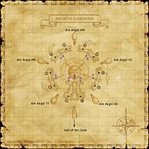

Description
Ru'Aun Gardens is an outdoor area in Tu'Lia.
Map

Notorious Monsters

Regular Monsters


Event Monsters
| Name | Level | Drops | Steal | Family | Spawns | Notes |
|---|---|---|---|---|---|---|
 MimicImage source MimicImage source | 80-82 | Ru'Aun Coffer Key | — | Mimics | 1 | Failed coffer pick; A |
Maps


EXP camps
Arrival and hazards
Main entrance book. Birds and pots on the outer islands; do not cast near elementals. Story access and an earlier visit are required.
Story walkthroughs in this area
| Story | Mission / quest |
|---|---|
| RoZ 13 | The Gate of the Gods |
| RoZ 14 | Ark Angels |
| RoZ 15 | The Sealed Shrine |
| RoZ 16 | The Celestial Nexus |
| RoZ Q4 | Divine Might |
References
External references describe their own server or retail rules. Documented Zenith changes take precedence.
Map credits: Map 1 — HorizonXI Wiki · Map 2 — HorizonXI Wiki · Map 3 — HorizonXI Wiki · Map 4 — HorizonXI Wiki · Map 5 — HorizonXI Wiki · Map 6 — HorizonXI Wiki · Map 7 — HorizonXI Wiki. Original game maps © SQUARE ENIX; redrawn maps retain the credited authorship and license.


Additional level-75 reference


|
Part of the floating island of Tu'lia, constructed ten thousand years ago by the Zilart as the "Gate of the Gods" this is said to be the very entrance to paradise itself. The Ru'Aun Gardens make up the exterior of Tu'lia, an array of floating isalnds worn by time and overgrown with moss. Also known as "Sky" by various adventurers, this is the home to the Shijin, divine guardians of the cardinal directions, and a number of other monsters. Connecting Areas
|
Notes
The main island is surrounded by four midsized "elemental" islands, which are in turn surrounded by a nine alternating smaller "Guardian" islands and "Ark Angel" islands. Access between islands is governed by a variety of colored portals. The blue portals provide access to and between the "elemental" islands - so named because each island is home to two different elementals. The blue portals must be activated by a nearby Pincerstone. The yellow portals provide access from the elemental islands to/from the "Guardian" islands - so named because each is home to a different guardian. The red portals provide access from the elemental islands to the "Ark Angel" islands - so named because each is home to an ark angel that must be defeated for a mission. The green portals are used as points of arrival from the Crag Halls of Transference.


Involved in Quests/Missions
| Mission | Country | Starter | Location |
| Zilart Mission 14:Ark Angels | Zilart | --- | --- |
| Zilart Mission 15:The Sealed Shrine | Zilart | --- | --- |
Coffer/Chest Contents
|
Weather
NPCs Found Here
| |||||||||||||||||
Notorious Monsters Found Here
|
Name |
Level |
Drops |
Steal |
Family |
Spawns |
Notes | |||||||
|
88-90 |
1 |
A, T | ||||||||||
|
80-82 |
1 |
A, M | |||||||||||
|
88-90 |
1 |
A, T | ||||||||||
|
88-90 |
1 |
A, T | ||||||||||
|
88-90 |
1 |
A, T | ||||||||||
|
HP = Detects Low HP; M = Detects Magic; Sc = Follows by Scent; T(S) = True-sight; T(H) = True-hearing JA = Detects job abilities; WS = Detects weaponskills; Z(D) = Asleep in Daytime; Z(N) = Asleep at Nighttime | |||||||||||||
Mobs Found Here
|
Name |
Level |
Drops |
Steal |
Family |
Spawns |
Notes | |||||||
|
78-79 |
4 |
M | |||||||||||
|
78-79 |
4 |
M | |||||||||||
|
78-79 |
4 |
M | |||||||||||
|
78-79 |
4 |
M | |||||||||||
|
78-79 |
4 |
M | |||||||||||
|
78-79 |
4 |
M | |||||||||||
|
78-79 |
4 |
M | |||||||||||
|
78-79 |
4 |
M | |||||||||||
|
72-74 |
64 |
H | |||||||||||
|
75-78 |
101 |
A, S, M | |||||||||||
|
?? |
|
Spawned when |
A | |||||||||
|
73-76 |
84 |
A, M | |||||||||||
|
HP = Detects Low HP; M = Detects Magic; Sc = Follows by Scent; T(S) = True-sight; T(H) = True-hearing JA = Detects job abilities; WS = Detects weaponskills; Z(D) = Asleep in Daytime; Z(N) = Asleep at Nighttime | |||||||||||||
Teleportation from the Hall of Transference to Ru'Aun Gardens
In order to be able to teleport to Ru'Aun Gardens from the Hall of Transference, you will first need to complete a set of requirements. These requirements include
- Access to Tu'Lia
- Acquisition of the key item from your race's tower in The Garden of Ru'Hmet (this requires you to be on or past Chains of Promathia 8-3)
- A Clear Chip to be placed into the right-hand Large Apparatus located within the Hall of Transference
Acquisition of the key item from your race's tower in The Garden of Ru'Hmet grants you the title of "Warrior of the Crystal." This title is required for registering your data (see below) in Ru'Aun Gardens - data that permits you to use the Large Apparatuses and green teleporters. You can change your title to "Warrior of the Crystal" for 300 gil by speaking to Aligi-Kufongi located at (H-9) on the main floor of Tavnazian Safehold.
Registering Data
Set your title to "Warrior of the Crystal", and travel to Ru'Aun Gardens. There are two green teleporters with hexagonal shapes floating above them, one located at (G-9) and the other at (I-9). Step onto one of these green teleporters to register your data (you only need to register your data once). Once registration is complete, you will receive the text
"Your d...ta wil... be ...gistered."
"Regis... ...omplete."
Teleporting
Once your data is registered, you can teleport from the Hall of Transference to Ru'Aun Gardens.
To teleport to Ru'Aun Gardens from the Hall of Transference, you will need to purchase a Clear Chip from any of the goblins located in the cities. Place this chip into the right-hand Large Apparatuses located in any of the Halls of Transference so that it may fully function. Then, step onto the pad in front of the Large Apparatus to teleport to Ru'Aun Gardens.
Notes: So far, the only title that seems to register data is "Warrior of the Crystal." Using a Large Apparatus to teleport to Ru'Aun Gardens may result in the break of the Clear Chip, which will require another to be placed into that Large Apparatus to use it again.
Adapted from Eden Wiki: Ru'Aun Gardens · Contributors and history · CC BY-SA 4.0. Revision 45839. Layout, links and optional background text adapted for Zenith.